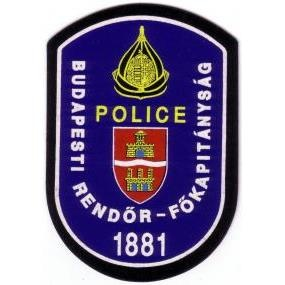

A Sztori
A Drone Tech 2015-ben alakult, mint professzionális drón szolgáltatásokat nyújtó vállalat, amely az ipari és kereskedelmi ügyfelekre fókuszál.
2018-tól kezdve saját mesterséges intelligenciát is fejleszt 3D térkép alkotó szoftverhez. 2020-tól pedig már saját építésű mezőgazdasági drónnal is rendelkezik, ami a teljes iparágban egyedül álló.
| Típus | Szolgáltatás | Kép |
|---|---|---|
| DJI Agras T16 |
|

|
| DJI Inspire 2 |
|

|
| DJI Matrice 300 RTK |
|

|
Alapítók

Ivándi Gábor

Tasnádi Dömötör

Cserkó Máté
Partnereink
